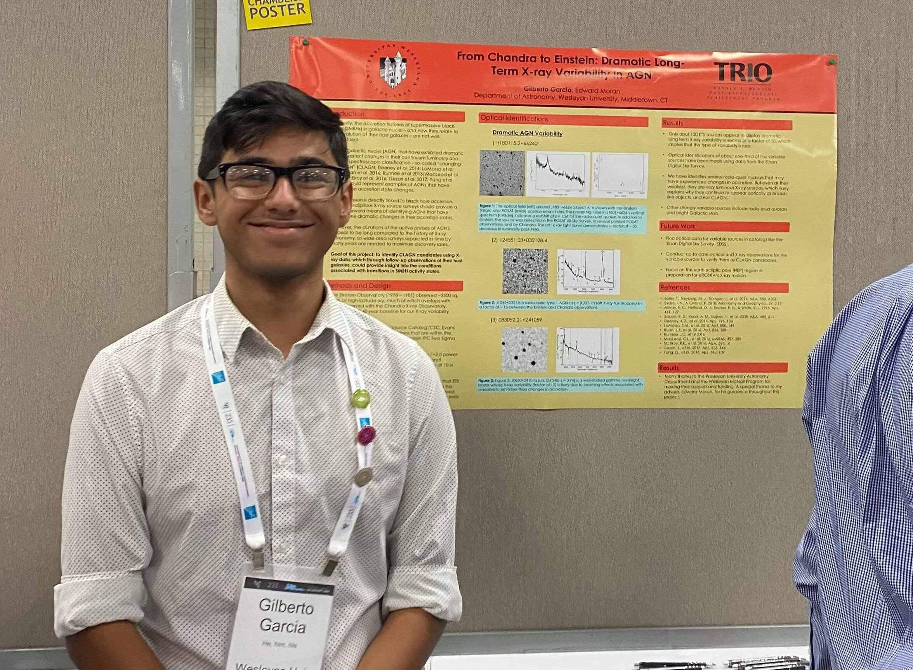
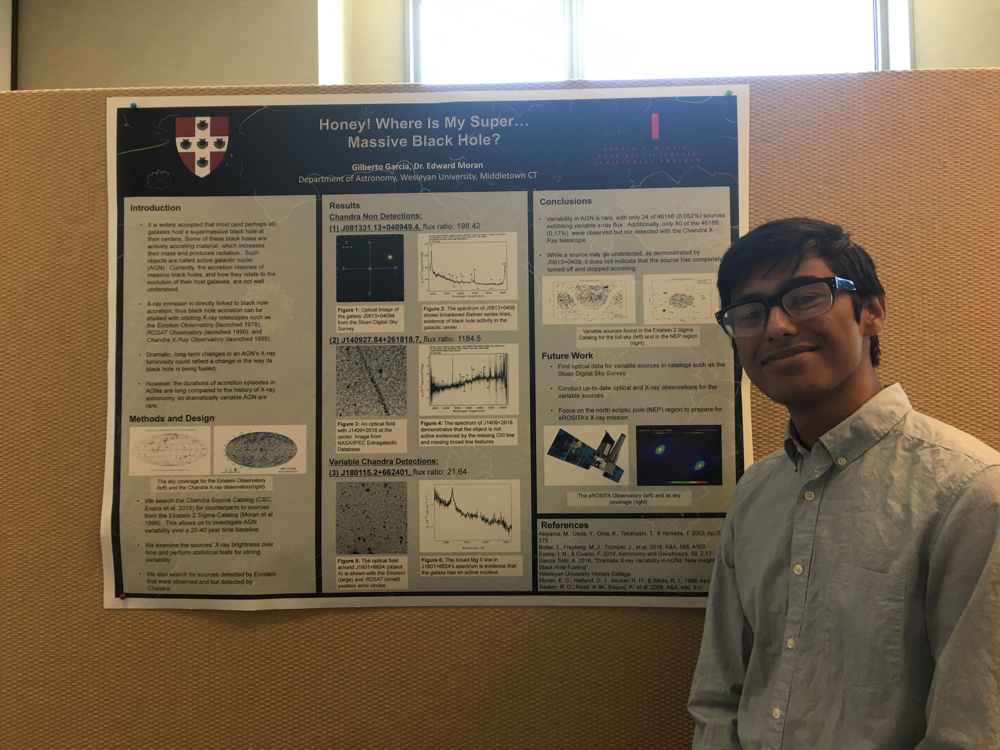
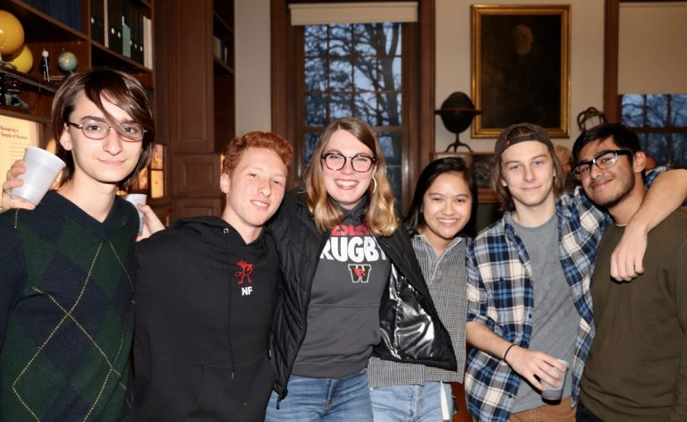
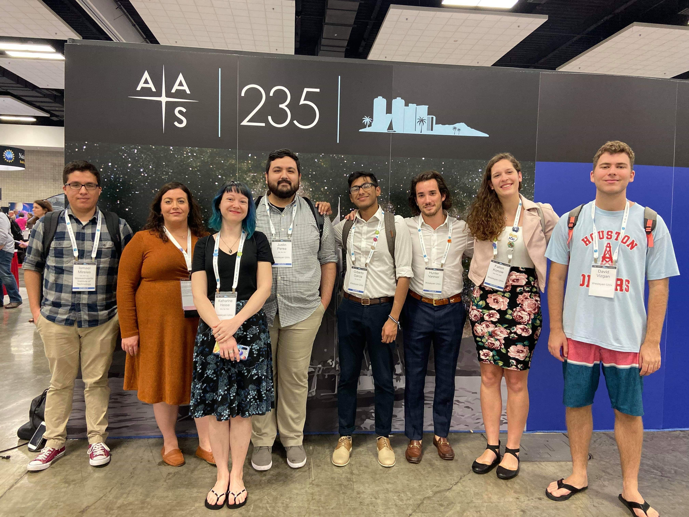
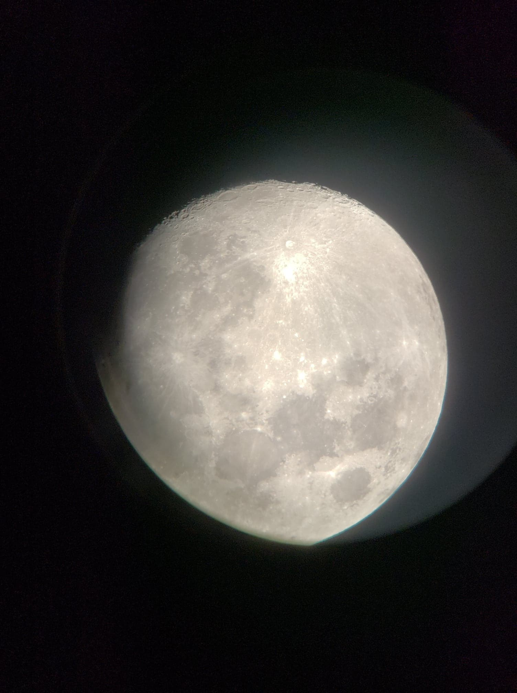
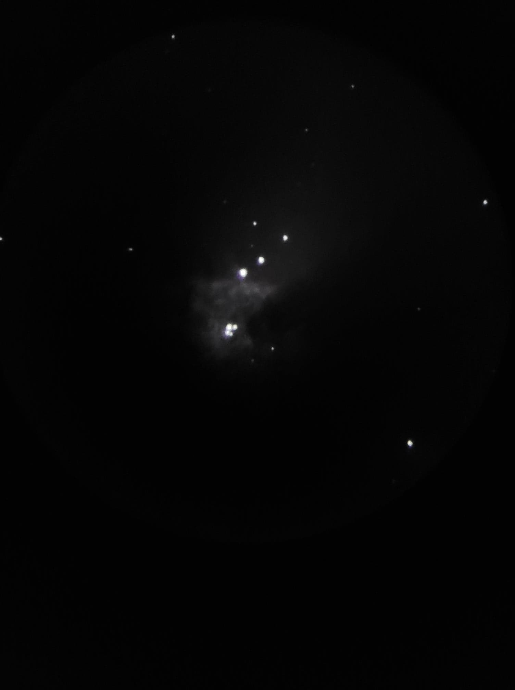
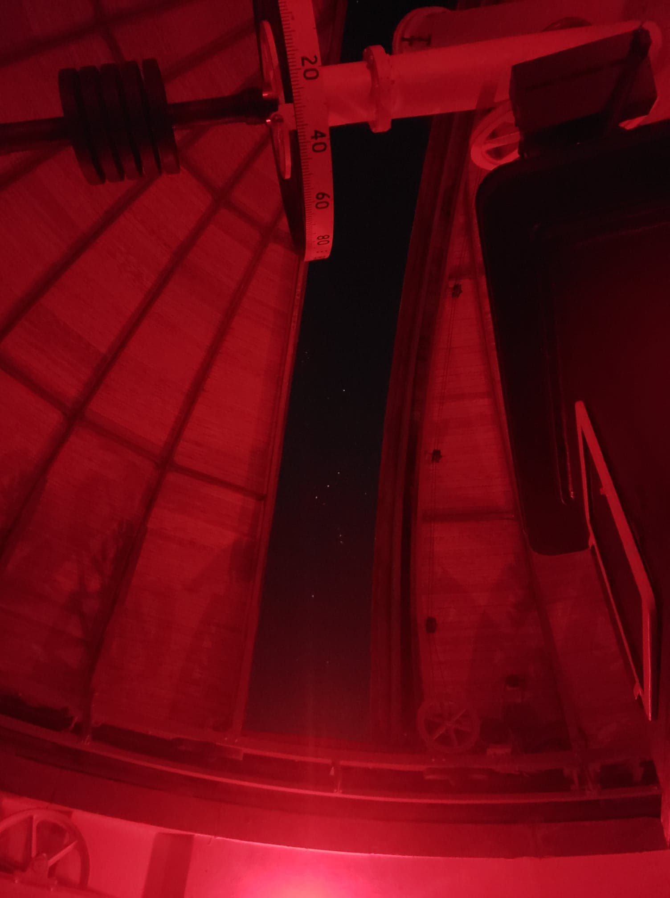
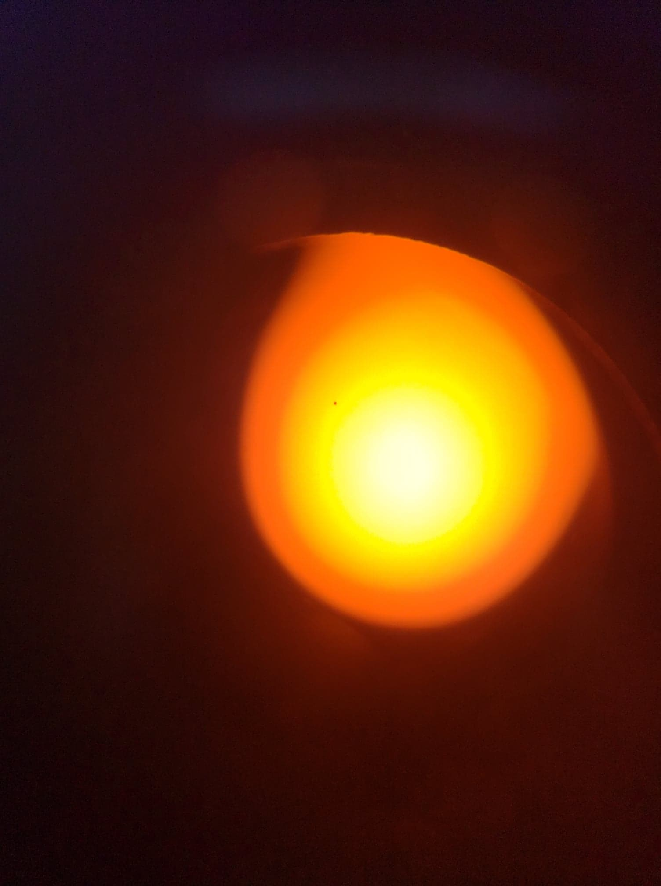

Hi! I’m Gilberto Garcia.
I am a first-generation college graduate presently working as a post baccalaureate research assistant at Loyola University - Chicago’s Department of Physics.
I currently live in Chicago, Ill, where I was born and raised.
Previously, I lived in Middletown, CT for four years.
During that time, I completed my undergraduate education at Wesleyan University, earning a degree in Astronomy and Physics and working as an Astronomy research assistant.
With this experience, I am pursuing a career as an Astrophysicist.
You can learn more about my research in my research page.
Because of my background, I am deeply invested in STEM outreach and education, specifically working towards minimizing the education access gap and providing resources to underserved student populations.
Because of this, I have actively participated in STEM outreach programs and tutoring positions in Chicago and Middletown.
To learn more about my work, you can take a look at my CV page
Outside of academics, I have enjoyed watching and playing soccer (or football if you are passionate about using the “proper” name), playing for school, club, and travel teams.
To remain active, I enjoy long-distance running.
I would love to run a half or full marathon some day.
I am also interested in all-things cars, from repairing junk cars with my dad to talking about dream cars with friends.
Research
Undergraduate Research: Dramatic, Long-term X-ray Variability in AGN
Constraints on the duty cycle and duration of accretion episodes in active galactic nuclei (AGNs) are vital for establishing how most AGNs are fueled, which is essential for a complete picture of black hole/galaxy co-evolution.
Perhaps the best handle we have on these activity parameters is provided by AGNs that have displayed dramatic, persistent changes in their bolometric luminosities.
Given that X-ray emission is directly linked to black-hole accretion, X-ray source catalogs should provide a straightforward means of identifying AGNs that have undergone dramatic changes in their accretion states.
However, it appears that such events are very rare, so observations separated in time by many years are needed to maximize discovery rates.
In this project, we cross-correlated the Einstein IPC Two-Sigma Catalog with the Chandra Source Catalog to identify a sample of soft X-ray sources that varied by factors of at least 10 over timescales of 20 or more years.
Most of the extremely variable sources revealed via this technique were dimmer in the Chandra era, owing to the lower sensitivity and modest exposures associated with Einstein.
Optical spectra from the Sloan Digital Sky Survey indicated that many of the variable sources were radio-quiet AGNs with broad emission lines — not "changing-look" objects that have more subtle AGN signatures in their spectra.
We created long-term X-ray light curves for the sources by combining the Einstein and CSC fluxes with those obtained from serendipitous pointed observations by ROSAT.
This work resulted in an undergraduate thesis that was awarded high honors and was presented at various conferences.
You can find my thesis and my presentations in the bibliography and presentations section of my CV page.
Loyola University - Chicago, Department of Physics
Project: exploring the relationship between DNA structure and genetic disorders
Teaching component: redesigning the traditional introductory physics lab into an interdisciplinary, research-based lab experience
Research Assistant (2018-2020)
Wesleyan University, Department of Astronomy
Project: investigating the role that AGN fueling has on black hole/galaxy co-evolution
Teaching
Teaching Assistant (Spring 2020)
Wesleyan University, Department of Astronomy
Class: The Dark Side of the Universe (ASTR111), an introductory, non-major track course taught by Prof. Edward Moran
Responsibilities: grade homework weekly, hold weekly homework sessions, operate and lead bi-weekly observing nights using Wesleyan's telescopes
Teaching Assistant (Fall 2019)
Wesleyan University, Department of Astronomy
Class: Exploring the Cosmos (ASTR105), an introductory, non-major track course taught by Prof. Seth Redfield
Responsibilities: grade homework weekly, hold weekly homework sessions, operate and lead observing nights using Wesleyan's telescopes
Leadership
Coordinator (2016 - 2020)
Wesleyan University, Jewett Center for Community Partnerships
Partnered with Cross Street AME Zion Church in Middletown, CT to provide underserved and minority students (K-12) with a free after-school program
Recruited and trained Wesleyan students to serve as tutors for the program, also served as a tutor myself
Club Co-Founder (2018-2020)
Club: Wesleyan University Astronomy Club (WesAstro)
created a space for non-STEM majors at Wesleyan to get involved with the Astronomy department at an enthusiast's level
Lead bi-weekly meetings on current or classic Astronomy topics and occasionally had observing nights
Astronomy Public Outreach Volunteer (2018 - 2020)
Wesleyan University, Department of Astronomy
Participated in Space Night and Kids' Night, outreach programs at Wesleyan's Van Vleck Observatory that were geared towards adults and kids, respectively.
Led presentations, activities and public observing on a weekly basis.
Presentations
Jan 2020: Poster presentation at American Astronomical Society's 235th meeting at Honolulu, HI [poster]
Oct 2019: Poster presentation at the Keck Northeast Astronomy Consortium (KNAC) at Vassar University [poster]
Jul 2019: Poster presentation at the McNair National Conference at UCLA [poster]
Jun 2019: Poster presentation at Wesleyan's Summer Research Symposium [poster]
Sep 2018: Powerpoint presentation at KNAC at Middlebury University [powerpoint]
Jun 2018: Poster presentation at Wesleyan's Summer Research Symposium [poster]
Bibiliography
Publications
Coming very soon!
Bachlor's Thesis
Garcia, G. (2020). Dramatic, Long-term Variability in AGN. Wesleyan University. [pdf]
Awards, Honors, and Affiliations
Fellow, McNair Post-Baccalaureate Program, Wesleyan University (2019-Present)
Fellow, QuestBridge National College Match Program (2016-Present)
Fellow, Chicago Scholars Foundation Program (2016-Present)
Fellow, Space Telescope Science Institute Summer Research Program (Summer 2020)
*Canceled due to COVID-19*
Recipient, High Honors for Astronomy Thesis, Wesleyan University (Spring 2020)
Fellow, Summer Research Program, Wesleyan University (Summer 2019)
Fellow, Summer Research Program, Wesleyan University (Summer 2018)
Skills
Operating Systems: Mac OS, Microsoft Windos
Languages: Python, C, SQL, HTML, CSS, Latex
Software: IRAF, SAOImage DS9, Mathematica, Microsoft Excel, Google Drive

My poster presentation day at AAS235 in Honolulu, HI. Presented my undergraduate research work.

Presenting my undegraduate research at the 2019 National McNair conference at UCLA.

Astro friends and me at the Wesleyan Astronomy department 2019 holiday party.

Wesleyan Astro department in Hawaii!
"Astrophotography"
Below are some of my attempts to take pictures of celestial objects with my Samsung Galaxy S9.
I would love to be able to learn proper astrophotography one day; it seems like a pretty expensive hobby though.

A beautiful moon picture taken from Van Vleck Observatory's (VVO) now defunct 16'' reflecting telescope. The moon is my favorite object to show at public observing nights, never fails to amaze people!

The Orion Nebula taken using VVO's 24'' refractor. Visible is some of the dust in the nebula and the trapezium.

The Orion Cluster as seen through the dome slit of VVO's 24'' telescope (might need to zoom in to see the cluster better).

Mercury transiting the sun! Taken from a solar telescope with a Hydrogen alpha filter. Might need to zoom in on this one too. Otherwise, Mercury looks like a smudge on your screen.